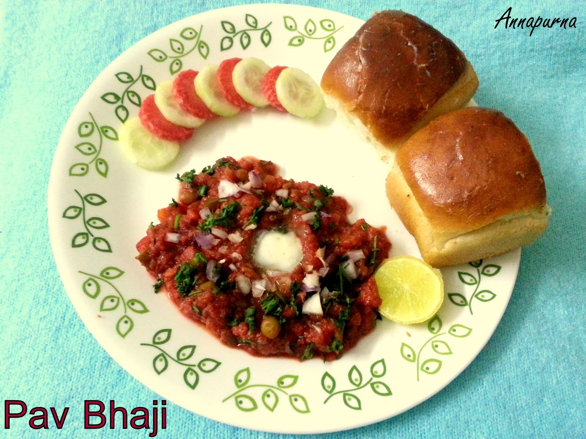

pawbhaji |
| Rateing |
| prep time:20 minit |
| cook time:20 minit |
| total time:40 minit |
|  |
Ingredients: |
2 medium Potatoes (approx. 1½ cups chopped)
1/2 cup Green Peas (fresh or frozen)
3/4 cup chopped Cauliflower (approx. 1/4 head of cauliflower)
1/2 cup chopped Carrot (approx. 1 medium)
1 large Onion, chopped (approx. 3/4 cup)
1 tablespoon Ginger Garlic Paste
2 medium Tomatoes, chopped (approx. 1¼ cup)
1/2 cup chopped Capsicum (approx. 1 small)
1½ teaspoons Red Chilli Powder (or less)
1/4 teaspoon Turmeric Powder
1 teaspoon Cumin-Coriander Powder, optional
1 teaspoon Readymade Pav Bhaji Masala Powder
1 teaspoon Lemon Juice
Salt to taste
2 tablespoons Oil + 2 tablespoons Butter
Butter for serving
2 tablespoons finely chopped Coriander Leaves
8 Pav Buns, for serving
Directions:
step-1
Take all the vegetables listed in the ingredients.
|
Instructions: |
| The boiled and mashed veggies give it a smooth yet chunky texture while specially blended Pav Bhaji Masala gives it an irresistible, mouthwatering aroma and taste – serve it with a piece of buttery shallow fried bun and voila! – it’s a perfect party food that can be made in advance. It’s also the best way to make your kids eat some veggies as sometimes kids don’t like the taste of a particular veggie, but in pav bhaji they wouldn’t even notice any veggie and eat joyfully. Whether you want to entertain the guests or feed your kid, this recipe’s step by step photos, tips and variations will help you make best pav bhaji at home in just 40 minutes. |
video: |